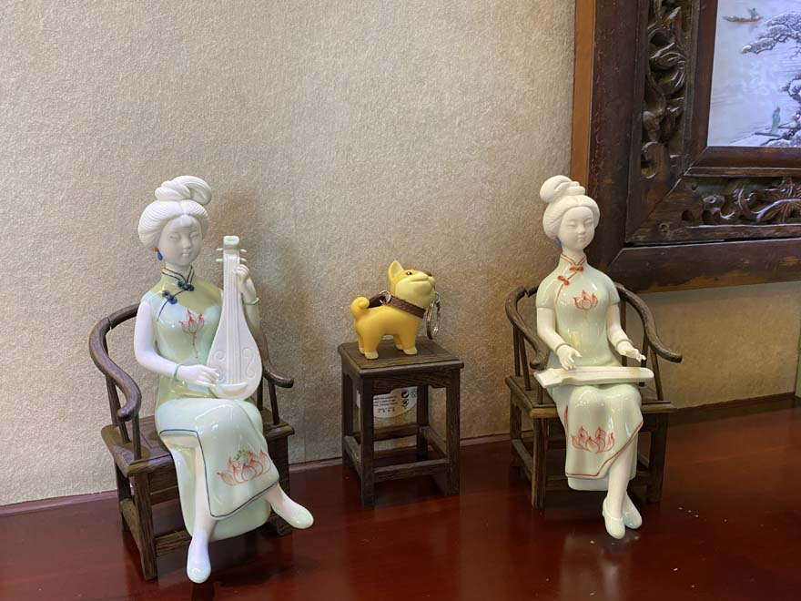
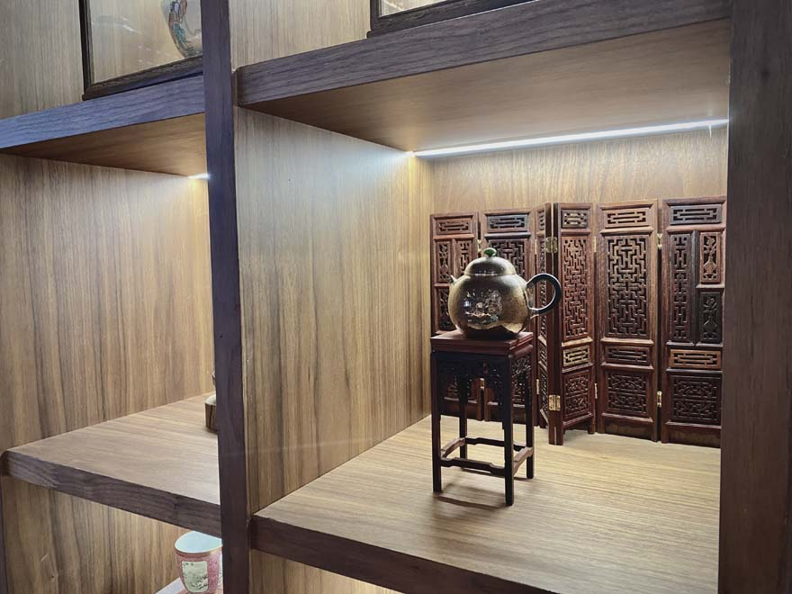

I used to think that deciding a major can be difficult but no longer than months, but I have to admit that it took me years to know what I really like. I didn’t decide which major to focus on until the end of my first year undergraduate study. In high school, I was struggling with choosing business or art. With my parents' suggestion of business, I focused on economics and marketing. As I learned more about business, it became different than I expected. Theoretical knowledge is not very difficult, but business is a subject that needs combination with practical application.
At that time, I was lucky to have an opportunity to visit a design company for one day. I didn’t know anything about adobe, figma, html, but designing packages, posters, and products really impressed me. After knowing their work and corresponding majors, I think graphic design is more suitable for all my hobbies (see post two) and personality. During that summer time, I also went to a painting studio. Although I haven’t systematically studied the color palette, structure of different objects, I handle that really fast. When my abilities and talents are recognized, I think about majors related to this. As I was painting, I found that my brain is active to connect knowledge in practical needs. Compared with my previous study of business, which I was unable to combine theory with practice, design makes me more comfortable and increases my confidence.
In addition, I enjoy the process of drawing. Such interest will make me take the initiative to find sources on major design websites to improve my aesthetics, and explore favorite bloggers and vloggers, because this area not only needs creativity but also responsiveness to the market trend. Active learning makes me think that if I choose this major in the future, I will also form the habit of self-study and improve my understanding of what I have learned. Until now, I still feel glad to become a designer.